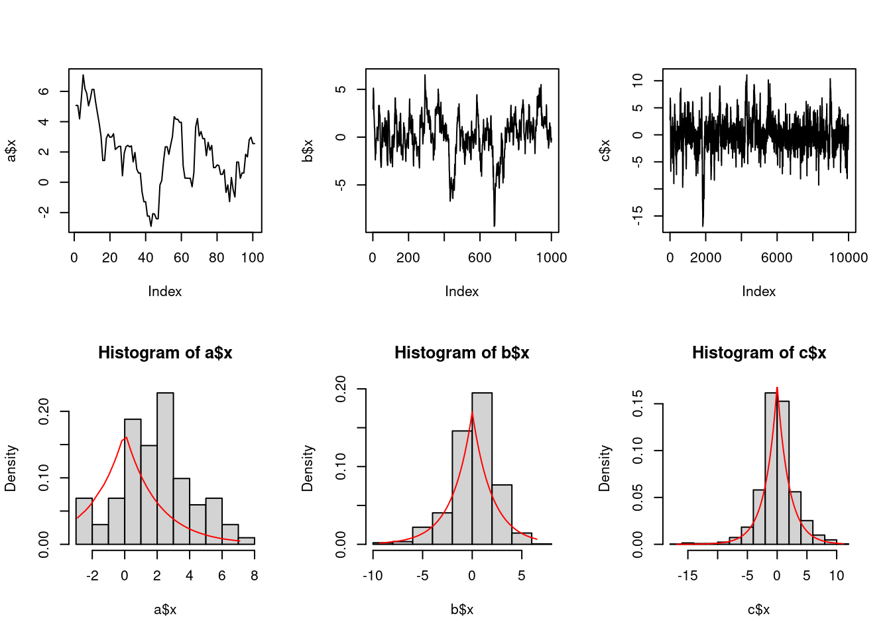
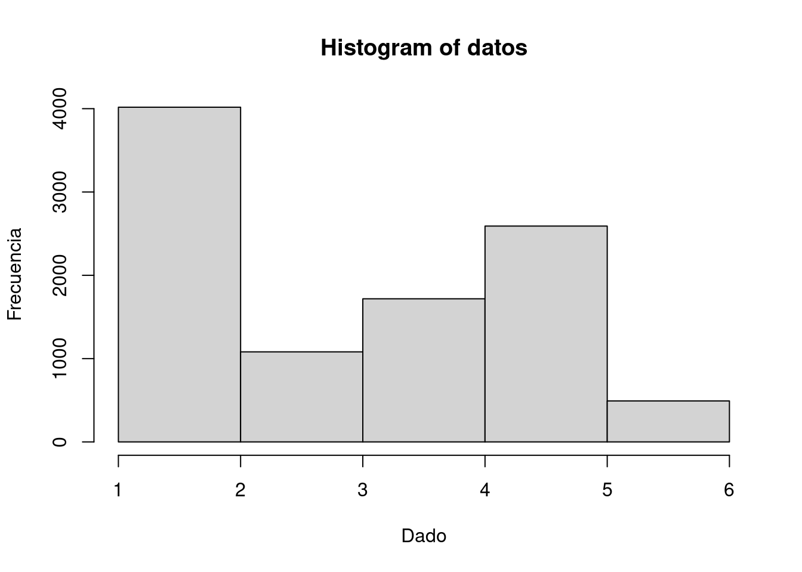

library(ggplot2)
library(tidyverse)
library(patchwork)
library(kableExtra)
library(VeryLargeIntegers)Tarea3
Tarea 3.
Calcular el estimador de Monte Carlo de la integral \[\int_0^{\pi/3}\text{sin}(t)dt\] y comparar el estimador con el valor exacto de la integral.
Escribir una función para calcular el estimador de Monte Carlo de la función de distribución \(\mathcal{Be}(3,3)\) y usar la función para estimar \(F(x)\) para \(x = 0.1,...,0.9\). Comparar los estimados con los valores obtenidos con la función pbeta de R.
3. Usar integración Monte Carlo para estimar: \[\int_0^1\frac{e^{-x}}{1+x^2}dx\]
getMCArea <- function(f,xinf,xsup,n){
# Generamos n puntos aleatorios
x <- runif(n, xinf, xsup) # [0, 1]
y <- runif(n, 0, max(f(x))) # [0, max(f)]
# Calculamos los puntos que caen debajo de la curva y en ella
points_in_curve <- sum(y <= f(x))
# Calculamos la proporción de puntos dentro de la curva respecto al
# total de puntos lanzados
proportion <- points_in_curve / n
# Calculamos el área total del rectángulo que cubre la función f de integración
total_area <- (xsup - xinf) * max(f(x))
# Multiplicamos la proporción de puntos debajo de la curva
#por el área total del rectángulo
integral_estimate <- proportion * total_area
return(integral_estimate)
} # Definimos la función a integrar
f <- function(x) {
exp(-x) / (1 + x^2)
}
#número máximo de puntos aleatorois para el cálculo
n <- 1000000
#limites
xinf = 0
xsup=1
# Resultado
integral_estimate <- getMCArea(f,xinf,xsup,n)
cat("Estimación de la integral de f(x) mediante el MC:", integral_estimate, "\n")Estimación de la integral de f(x) mediante el MC: 0.5250368 calcular el tamaño de muestra necesario para obtener un error de estimación máximo de \(\pm 0.001\).
# Calculamos el valor exacto de la integral
exact_integral <- integrate(f, 0, 1)$value;
# Definimos el error de estimación máximo
max_error <- 0.001;
# Inicializar el tamaño de muestra
n <- 0;
current_error <- 1;
while (current_error > max_error) {
n <- n + 1;
curr_area <- getMCArea(f,xinf,xsup,n)
current_error <- abs( curr_area - exact_integral);
}
cat("Tamaño de muestra necesario con max error de +-0.001$ = "
, n, ",con área = ", curr_area)Tamaño de muestra necesario con max error de +-0.001$ = 49 ,con área = 0.52575094. Sea \(\hat\theta_{IS}\) el estimador de importancia de \(\theta=\int g(x)dx\), donde la función de mportancia \(f\) es una densidad. Probar que si \(g(x)/f(x)\) es acotada, entonces la varianza del estimador de muestreo por importancia \(\hat\sigma_{IS}\) es infinita.
Demostración Analítica:
Recordando la definición de la varianza del estimador de muestreo por importancia:
- \(\hat{\sigma}_{IS}^2 = \text{Var}(\hat{\theta}{IS}) = E[(\hat{\theta}_{IS} - \theta)^2]\)
Donde:
\(\hat{\theta}_{IS}\) es el estimador de importancia de \(\theta.\)
\(\theta\) es el valor verdadero que estamos tratando de estimar (en este caso, \(\int g(x)\)). \(E[\cdot]\) es el valor esperado.
Ahora definamos \(W(x) = \frac{g(x)}{f(x)}\). Podemos, entonces, definir el estimador de importancia \(\hat{\theta}_{IS}\) como: \(\hat{\theta}_{IS}\) = \(\int W(x) f(x) dx\)
Para demostrar que la varianza del estimador de muestreo por importancia \(\hat{\theta}_{IS}\) es finita, mostraremos que \(E[\hat{\theta}_{IS}]\) y \(E[\hat{\theta}_{IS}^2]\) son finitos.
- Finitud de \(E[\hat{\theta}_{IS}]\):
- \(E[\hat{\theta}_{IS}]\) = \(E[\int W(x) f(x) dx]\) = \(\int E[W(x)] f(x) dx ]\)
Dado que \(\frac{g(x)}{f(x)}\) está acotada, \(W(x)\) es una función acotada y, por lo tanto, \(E[W(x)]\) es finito. Por lo tanto, la integral anterior es finita, lo que implica que \(E[\hat{\theta}_{IS}]\) es finito.
- Finitud de \(E[\hat{\theta}_{IS}^2]\):
- \(E[\hat{\theta}_{IS}^2]\) = \(E[(\int W(x) f(x) dx)^2]\) = \(\iint W(x_1)W(x_2) f(x_1)f(x_2) dx_1dx_2\)
Dado que \(\frac{g(x)}{f(x)}\) está acotada, \(W(x)\) es una función acotada, y por lo tanto \(W(x_1)W(x_2)\) es acotada para todos los \(x_1\) y \(x_2\). Por lo tanto, la integral anterior es finita, lo que implica que \(E[\hat{\theta}_{IS}^2]\) es finito.
Dado que tanto \(E[\hat{\theta}_{IS}]\) como \(E[\hat{\theta}_{IS}^2]\) son finitos, la varianza \(\hat{\sigma}_{IS}^2\) también es finita.
Implementación en R:
Vamos a generar funciones \(f(x)\) y \(g(x)\) arbitrarias que estén acotadas, y luego realizaremos una simulación para calcular la varianza del estimador.
# Función f(x) (densidad de importancia) - podemos usar una distribución uniforme
f <- function(x) {
return(dunif(x, min = 0, max = 1)) # Distribución uniforme entre 0 y 1
}
# Función g(x) - podemos usar una función acotada arbitraria
g <- function(x) {
return(x^2) # Por ejemplo, una función cuadrática acotada en [0, 1]
}
# Número de muestras
N <- 10000
# Generar muestras utilizando la densidad de importancia f(x)
samples <- runif(N, min = 0, max = 1)
# Calcular el estimador de importancia theta_IS
theta_IS <- mean(g(samples))
# Calcular la varianza del estimador
variance <- var(g(samples))
# Verificar si la varianza es finita
if (is.finite(variance)) {
print("La varianza del estimador de muestreo por importancia es finita.")
} else {
print("La varianza del estimador de muestreo por importancia no es finita.")
}[1] "La varianza del estimador de muestreo por importancia es finita."5. Encontrar dos funciones de importancia \(f_1\) y \(f_2\) que tengan soporte en \((1,\infty)\) y estén ‘cerca’ de: \[g(x)=\frac{x^2}{\sqrt{2\pi}}e^{x^2/2}, x>1\]
¿Cuál de las dos funciones de importancia debe producir la varianza más pequeña para estimar la integral siguiente por muestreo de importancia?
\[\int_1^\infty\frac{x^2}{\sqrt{2\pi}}e^{x^2/2}\]
- Usar el algoritmo de Metropolis-Hastings para generar variadas aleatorias de una densidad Cauchy estándar. Descarta las primeras 1000 observaciones de la cadena, y comparar los deciles de las observaciones generadas con los deciles de la distribución Cauchy estándar. Recordar que una densidad \(\text{Cauchy}(\theta,\eta)\) tiene densidad dada por la siguiente función:
\[f(x)=\frac{1}{\theta\pi\Big(1+\Big[\frac{x-\eta}{\theta}\Big]^2\Big)}, x\in\Re,\theta>0\]
La densidad Cauchy tiene \(\theta=1, \eta=0\), y corresponden a la densidad \(t\) con un grado de libertad.
- Implementar un muestreador de Metropolis de caminata aleatoria para generar muestras de una distribución estándar de Laplace: \[f(x)=\frac{1}{2}e^{-|x|}, x\in\mathbb{R}\] Para el incremento, simula una normal estándar. Comparar las cadenas generadas cuando la distribución propuesta tiene diferentes varianzas. Calcular las tasas de aceptación de cada cadena.
simula <- function(n){
f <- function(x){exp(-abs(x)/2)}
x <- NULL
x0 <- 3
c <- 1/(sqrt(2*pi*16)*(pnorm(8,mean=3,sd=4)-pnorm(1,mean=3,sd=4)))
for(i in 0:n){
w <- ifelse(i==0,x0,x[i])
y <- rnorm(1, mean = w, sd = 1)
alfa <- (f(y)*dnorm(w,mean=y,sd=1))/(f(w)*dnorm(y,mean=w,sd=1))
x <- append(x,ifelse(runif(1)<alfa,y,w))
}
return(list(x=x,f=c*f(sort(x))))
}
a <- simula(100)
b <- simula(1000)
c <- simula(10000)
par(mfrow = c(2,3))
plot(a$x,type="l"); plot(b$x,type="l"); plot(c$x,type="l")
hist(a$x,probability =T); lines(sort(a$x),a$f,col="red")
hist(b$x,probability =T); lines(sort(b$x),b$f,col="red")
hist(c$x,probability =T); lines(sort(c$x),c$f,col="red")
- Desarrollar un algoritmo de Metropolis-Hastings para muestrear de la distribución siguiente:
| dado | probabilidad |
|---|---|
| 1 | 0.01 |
| 2 | 0.39 |
| 3 | 0.11 |
| 4 | 0.18 |
| 5 | 0.26 |
| 6 | 0.05 |
con la distribución propuesta basada en un dado honesto.
set.seed(123)
n <- 10000 # Número de iteraciones
x <- numeric(n) # vector para guardar las n iteraciones
x[1] <- sample(1:6, 1) # se generan las n muestras de 1 a 6
# Definir la distribución objetivo
probabilidades <- c(0.01, 0.39, 0.11, 0.18, 0.26, 0.05) #información del problema
# Metropolis-Hastings
for (i in 2:n) {
current_x <- x[i - 1]
proposed_x <- sample(1:6, 1)
acceptance_ratio <- probabilidades[proposed_x] / probabilidades[current_x] # Razón de aceptación
# Se acepta cuendo la razón de aceptación es menor o igual u (numero aleatorio entre 0 y 1)
if (runif(1) <= acceptance_ratio) {
x[i] <- proposed_x
} else {
x[i] <- current_x
}
}
warm_up <- 100
# se desechan las primeras 100 muestras
datos <- x[(100 + 1):n]
hist(datos, breaks = 6,
xlab = "Dado", ylab = "Frecuencia")
- La sucesión de Fibonacci 1, 1, 2, 3, 5, 8, 13,… es descrita por recurrencia \(f_n=f_{n-1}+f_{n-2}\), para \(n\geq 3\) con \(f_1=f_2=1\)
- Mostrar que el número de sucesiones binarias de longitud \(m\) sin 1’s adyacentes es \(f_{m+2}\)
Demostración por inducción: Se cumple para m=1 \[ f_{m+2}=f_{1+2}=f_{3}=f_{2}+f_{1}=1+1=2\\ \{0,1\} \] Suponer que se cumple para m-1 \[ f_{m-1+2}=f_{m+1}=f_{m}+f_{m-1} \] Esto es las combinaciones de 0 y 1, de lomgitud \(m-1\) sin unos adyacentes es f_{m+1}
Finalmente tenemos que demostrar que para \(m\) se cumple:
\[ f_{m+2}=f_{m+1}+f_{m} \] Como sabemos que se cumple para \(f_{m+1}\), sabemos que de las las \(2^{m-1}\) combinaciones del paso anterior, hubo \(2^{m-1}-f_{m+1}\) que tuvieron 1’s adyacentes y que no van a dar nuevas combinaciones en el siguiente digito, y sabemos que de las combinaciones aceptadas para \(m-1\), \(f_{m-1}\) terminan en uno y en el siguiente dígito van a generar \(f_{m-1}\) combinaciones que no se acepten, esto es:
\[2^m = f_{m+2} + [2*(2^{m-1}-f_{m+1}) +f_{m-1}]\] \[2^m = f_{m+2} + [2^m-2f_{m+1}]+f_{m-1}\] \[2^m-2^m = f_{m+2}-2f_{m+1}]+f_{m-1}\] \[f_{m+2} = f_{m+1}+f_{m+1}-f_{m-1}\] \[f_{m+2} = f_{m+1}+f_{m}+f_{m-1}-f_{m-1}\] \[f_{m+2} = f_{m+1}+f_{m}\]
- Sea \(p_{k,m}\) el número de sucesiones binarias de longitud \(m\) con exactamente \(k\) 1’s. Mostrar que
\[p_{k,m}=\binom{m-k+1}{k}, k=0,1,...,\text{ceiling}(m/2)\] El problema es equivalente a demostrar: \[ \forall n \in \mathbb{Z}: f_n = \sum^{\lfloor \frac{n-1}{2} \rfloor}_{k=0}\binom{n-k-1}{k} \] Demostración por inducción:
Comprobamos que se cumple para \(n=1,2\) \[ f_1=1=\binom{0}{0}=\binom{1-0-1}{0}=\sum^{\lfloor \frac{1-1}{2} \rfloor}_{k=0}\binom{1-k-1}{k} \] \[ f_2=1+0=\binom{1}{0}=\binom{2-0-1}{0}=\sum^{\lfloor \frac{2-1}{2} \rfloor}_{k=0}\binom{1-k-1}{k} \]
si suponemos que \(n\) es par, tenemos que suponer que se cumple para \(n-1\) y \(n\):
\[ f_{n-1}=\sum^{\frac{n}{2}-1}_{k=0}\binom{n-k-1}{k}\\ f_{n}=\sum^{\frac{n}{2}-1}_{k=0}\binom{n-k-1}{k} \]
Y demostrar que se cumple para: \[ f_{n+1}=\sum^{\frac{n}{2}}_{k=0}\binom{n-k}{k}\\ f_{n+2}=\sum^{\frac{n}{2}}_{k=0}\binom{n-k+1}{k} \]
Primero para impares tenemos: \[\sum^{\frac{n}{2}}_{k=0}\binom{n-k}{k} =\binom{n}{0}+\sum^{\frac{n}{2}-1}_{k=1}\binom{n-k}{k}+\binom{n-\frac{n}{2}}{\frac{n}{2}}\] \[ =1+\sum^{\frac{n}{2}-1}_{k=1}\binom{n-k}{k}+\binom{\frac{n}{2}}{\frac{n}{2}}\] \[=1+\sum^{\frac{n}{2}-1}_{k=1}\binom{n-k}{k}+1\] \[=1+\sum^{\frac{n}{2}-1}_{k=1}\Big(\binom{n-k-1}{k}+\binom{n-k-1}{k-1}\Big)+1\] \[=1+\sum^{\frac{n}{2}-1}_{k=1}\binom{n-k-1}{k}+\sum^{\frac{n}{2}-1}_{k=1}\binom{n-k-1}{k-1}+1\] \[=1+\sum^{\frac{n}{2}-1}_{k=1}\binom{n-k-1}{k}+\sum^{\frac{n}{2}-2}_{k=0}\binom{n-k-2}{k-1}+1\] \[=\binom{n-2}{0}+\sum^{\frac{n}{2}-1}_{k=1}\binom{n-k-1}{k}+\sum^{\frac{n}{2}-2}_{k=0}\binom{n-k-2}{k-1}+\binom{n-(\frac{n}{2}-1)-2}{\frac{n}{2}-1}\] \[=\sum^{\frac{n}{2}-1}_{k=0}\binom{n-k-1}{k}+\sum^{\frac{n}{2}-1}_{k=0}\binom{n-k-2}{k}\] \[=f_n+f_{n-1}=f_{n+1}\] Y para pares: \[\sum^{\frac{n}{2}}_{k=0}\binom{n-k+1}{k}=\binom{n}{0}+\sum^{\frac{n}{2}}_{k=1}\binom{n-k+1}{k}\] \[=1+\sum^{\frac{n}{2}}_{k=1}\binom{n-k+1}{k}\] \[=1+\sum^{\frac{n}{2}}_{k=1}\Big(\binom{n-k}{k}+\binom{n-k}{k-1}\Big)\] \[=1+\sum^{\frac{n}{2}}_{k=1}\binom{n-k}{k}+\sum^{\frac{n}{2}}_{k=1}\binom{n-k}{k-1}\] \[=1+\sum^{\frac{n}{2}}_{k=1}\binom{n-k}{k}+\sum^{\frac{n}{2}-1}_{k=0}\binom{n-k-1}{k}\] \[=\binom{n-2}{0}+\sum^{\frac{n}{2}}_{k=1}\binom{n-k}{k}+\sum^{\frac{n}{2}-1}_{k=0}\binom{n-k-1}{k}\] \[=\sum^{\frac{n}{2}}_{k=0}\binom{n-k}{k}+\sum^{\frac{n}{2}-1}_{k=0}\binom{n-k-1}{k}\] \[=f_{n+1}+f_n=f_{n+2}\] c. Sea \(\mu_m\) el número esperado de 1’s en una buena sucesión de longitud \(m\) bajo la distribución uniforme. Encontrar \(\mu_m\) para \(m = 10, 100, 1000\)
adyacentes <- function(init,n){
# init: es la secuencia inicial
# n: número de iteraciones a correr en la cadena
m <- length(init) # longitud de las secuencias
nunos <- 0 # número total de 1's
nueva <-c(2,init,2) # identifica las secuencias que se generaron usando 2 como sep
for(i in 1:n) {
indice <- 1+ sample(1:m,1) # agrego el uno por el separador
flip <- !nueva[indice] # cambia el número
if (flip==0){
nueva[indice] <- 0
nunos <- nunos + sum(nueva)
next
} else {
if(nueva[indice-1] == 1 | nueva[indice+1] == 1){
nunos <- nunos + sum(nueva)
next
} else {
nueva[indice] <- 1
nunos <- nunos + sum(nueva)}
}
}
return(nunos/n - 4)
}adyacentes(rep(0,10), 100000)[1] 2.91924adyacentes(rep(0,100), 100000)[1] 27.77751adyacentes(rep(0,1000), 100000)[1] 274.6482